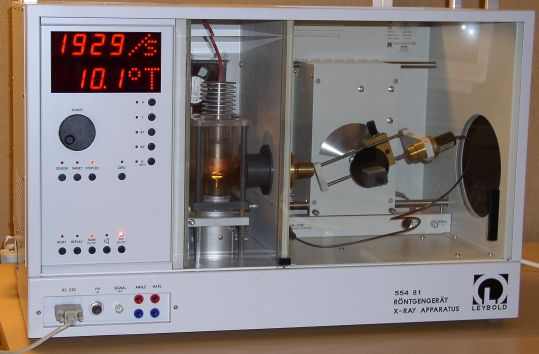

Röntgenspektra och Bragg-diffraktion
Förberedelse
- Fotonenergi är proportionell mot frekvens och omvänd proportionell mot
våglängd. Vi kan alltså skriva E=k/λ eller λ = k/E.
Härled att konstanten k =12,4 [Å.keV] om våglängden
ges i Ångström och fotonenergi i keV.
- Läs kapitel 12 av Jönsson. Besvara frågorna längre ner.
- Om du tar med en egen bärbar PC med RS232-anslutning, skulle du kunna installera mjukvaran
från Leybolds sajt.
Uppställning
Leybolds röntgenapparat är mikroprocessor-styrd. Högspänningen är bara på när det behövs;
så skyddas båda människokroppen och GM-röret. En PC läser in mätdata från röntgenapparaten,
och plottar dem automatiskt med lämpliga axlar.

Montera en litiumfluorid-kristall i hållaren om det är en molybden-anod; börja med natriumklorid om apparaten har Cu-anod.
Tryck på U och vrid upp högspänningen till 35 kV med knappen ADJUST.
Tryck på I och vrid upp emissionsströmmen upp till 1,00 mA.
Kolla att tiden är inställd på 1 s genom att trycka på Δt.
Kolla att vinkelsteget är inställd på 0,1° per mätpunkt genom att trycka på Δβ.
Tryck på COUPLED för att få båda kristallen och detektorn att rotatera (i förhållande 1:2, såkallad θ-2θ mode).
Tryck sedan på β limits för att ställa in vinkeln där mätningen ska börja (default 2,5°) och en gång till för var
den ska sluta (default 30,0°, men använd 50° vid kopparanod).
Starta programmet X-Ray Apparatus på PC:n.
Programmet känner av om kopplingen till röntgenapparaten fungerar.
Tryck nu på SCAN för att börja en mätning. Detektorn och kristallen rör sig,
högspänningen slås på automatiskt, displayn visar att detektorn registerar röntgenfotoner
och datorn börjar rita upp en graf.
När mätningen är klar, kan man starta en ny scan. Datorn visar nu båda grafer, och reproducerbarheten ska vara god.
Mät topparnas mittpunkter med hjälp av mjukvaraverktyg under högerklick med datormusen.
Karakteristiska linjer från koppar
 |
Förutom bromsstrålngskontinuum, finns det också linjer som
är karakteristiska för anodmaterialet. Om elektronernas kinetiska
energi är tillräckligt stor (dvs om spänningen är
tillräckligt hög), kan de slå ut elektroner från
anodatomernas K-skal. Hålet fylls upp av en elektron från en
energinivå med lägre bindningsenergi. Energiskillnaden kan ge
upphov till en foton.
Figuren bredvid visar nivå-schema av koppar.
Karakteristisk strålning från L→K är starkast och
kallas Kα-strålning. Kβ-strålning orsakas av
M→K övergångar. Kvantmekaniska urvalsreglar leder till
att endast 2p, 3p, osv till 1s kan ge upphov till
fotoner. |
Experiment
- Bestäm med hjälp av Braggs lag våglängderna av Kα and
Kβ av anodmaterialet.
Planavståndet i litiumfluorid är 2,014 Å och för NaCl 2,820 Å.
Glöm inte att också använda toppen i högre ordningar.
Vilket grundämne är det?
Jämför med literaturvärden.
- Kör med samma inställningar fem kurvor till med spänningar mellan 35 och 12 kV så att kurverna
hamnar i samma figur. Notera spänningen vid kurvorna. Observera att gränsen för signalen flyttar till större
vinklar (längre våglängder) ju lägre anodspänningen
blir (Duane-Hunt gränsvärdet). Vid vilken anodspänning försvinner de karakteristiska linjerna?
- Använd dessa fem spektra för att bestämma Plancks konstant i eV.Å med linjär regression.
Använd även uppskattning av standardavvikelsen för att jämföra med
literaturvärden.
- Ersätt nu kristallen med ett annat kristall. Ta ett rent fönster på datorn. Kör på 35 kV.
- Studera röntgenabsorption av pulverprov.
- Studera röntgenfluorescensspektra.
Instuderingsuppgifter Röntgen
Se t ex Jönsson kap. 4 och kap. 12.
- Ange ungefärligt våglängds- och fotonenergiområde för röntgenstrålning.
- Vad är det för likheter och olikheter mellan röntgen- och gammastrålning?
- Röntgenstrålning kan uppstå på två olika sätt. Redogör för dessa.
- Rita upp ett typiskt elektronexciterat röntgenspektrum. Ge namn åt de olika delarna.
- Vad menas med gränsvåglängden? Ge en kortfattad förklaring till begreppet.
- Formulera och härled Braggs relation.
- Rita upp ett energinivådiagram och inför beteckningar för de olika röntgenövergångarna.
- Enligt Moseley gäller att Kα-våglängden från olika grundämnen följer
relationen 1/λ = a(Z-d)², där Z är grundämnets atomnummer.
Motivera varför d ≈ 1.
Bakgrundsmaterial
- Leybolds pdf-filer:
- apparatens bruksanvisning (2,6 Mb)
- Mjukvara, ladda ner "Röntgengerät V1.25" (xrsetup.exe).
- Döda länkar: Röntgenröret (Mo), Cu-anod, Goniometer,
GM-rör,
Absorptionsfilter,
Ni-filter,
Absorptions-sats,
Filmhållare,
Comptonspridning,
Mätning av luftjonisation,
Laue-diffraktion
- Färr använde vi en annan apparat: gammal labb-instruktion
- "The development of x-ray analysis" av Sir Lawrence Bragg (Dover
paperback 1975)
- förklaring av Laue-diffraktion